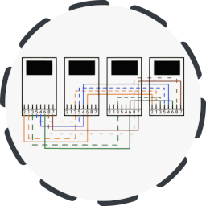
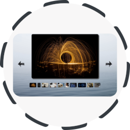
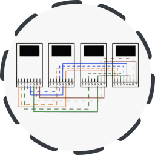
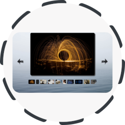
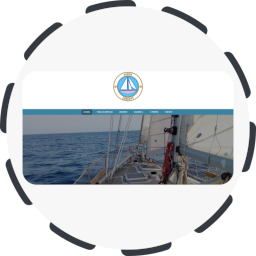
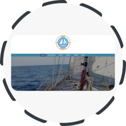

Projet de recherche : Framework QoCIM (Quality of Context Information Model). Un framework pour simplifier le développement
d’applications pour l’Internet des Objets. QoCIM permet de définir, collecter, filter puis exploiter la qualité des informations
nécessaires
au bon fonctionnement des applications de l'IoT. QoCIM s’intègre le cadre du projet ANR INCOME.
- Technologies : Java, Maven
- Licence : LGPL
- https://github.com/pierrick-marie/QoCIM-Framework
git clone https://github.com/pierrick-marie/QoCIM-Framework.git
Adaptation du protocol MQTT-SN
(MQTT for Sensor
Networks) pour Arduino. La communication entre les modules est assurée par des modules XBee.
- Technologies : Arduino, C/C++
- Licence : BSD 3-Clause
- https://framagit.org/pierrick/mqtt-sn
git clone https://framagit.org/pierrick/mqtt-sn.git
Documentation et construction de sonde réseau TAP
Projet pédagogique de développement d'une solution de surveillance et d'analyse de réseaux d'entreprises.
- Technologies : Ethernet, IP, GNU\Linux
- Licence : BSD 3-Clause
- https://framagit.org/network-probe/tap
git clone https://framagit.org/network-probe/tap.git
Une galerie d'image en JavaScript. Fonctionnalités : génération de la galerie à partir d'une liste d'image ; visualisation
en plein écran ; utilisation de raccourcis clavier.
- Technologies : HTML5, CSS3, JavaScript, JQuery
- Licence : BSD 3-Clause
- https://framagit.org/pierrick/simple-gallery
git clone https://framagit.org/pierrick/simple-gallery.git
Découverte et initiation au langage Rust. Développement d'un jeu Tétris, d'un player de musique, et d'un client / serveur
FTP.
- Technologies : Rust, SDL2, GTK3, Gstreamer
- Licence : BSD 3-Clause
- https://framagit.org/pierrick/rust-lang-discovery
git clone https://framagit.org/pierrick/rust-lang-discovery.git
Découverte et initiation du framework SpringBoot avec Kotlin. Développement d'une API REST, tests unitaires et
d'intégration, contrôle d'accès.
- Technologies : SpringBoot, Gradle, Kotlin
- Licence : BSD 3-Clause
- https://framagit.org/pierrick/spring-boot-discovery
git clone https://framagit.org/pierrick/spring-boot-discovery.git
Développement d'un Gyroscope sans fil à l'aide de deux Arduino Nano 33 Iot et d'un écran LED. Un premier Arduino mesure son
inclinaison et transmet en Bluetooth la mesure au second qui affiche la valeur sur un écran LED.
- Technologies : Arduino Nano 33 IoT, Bluetooth
- Licence : BSD 3-Clause
- https://framagit.org/pierrick/gyroscope-ble
git clone https://framagit.org/pierrick/gyroscope-ble.git
Site web : Pierrick MARIE.
- Technologies : Hugo server, Bootstrap
- https://pierrick-marie.github.io/
git clone
https://github.com/pierrick-marie/pierrick-marie.github.io.git
Site web : Ninaé.
- Technologies : Wordpress
- https://www.ninae.fr/
Intitulé : Gestion de bout en bout de la Qualité de Context pour l'Internet des Objets - le quadriciel QoCIM
- Technologies : Java
- Licence : BSD 3-Clause
- https://pierrick-marie.github.io/
 





 
